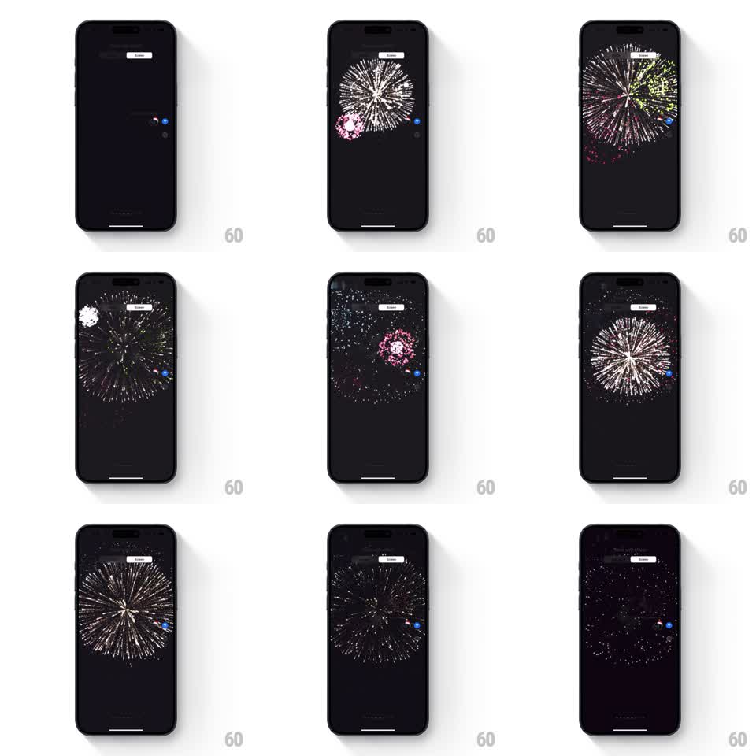

Media
Frame-by-frame

Rebuild this animation 1:1: Apple Messages' Fireworks screen effect - on a dark stage, fireworks launch and burst in sequence at different sky positions, each shell exploding into a radial fan of sparks that trails and fades.

Rebuild this animation 1:1: Apple Messages' Fireworks screen effect - on a dark stage, fireworks launch and burst in sequence at different sky positions, each shell exploding into a radial fan of sparks that trails and fades. ## Integration Integration: stack-agnostic spec - springs given as stiffness/damping, timed motions as duration + curve; map every value to your framework and animation library of choice. ## Scene The Messages "Send with effect" preview: the conversation dims to near-black with the sent bubble glowing at the right. Fireworks burst one after another across the dark sky - a small pink shell low on the left, large white-silver chrysanthemum bursts up top, a green burst near the bubble - each expanding into a spherical fan of streaking sparks. ## Motion spec Pattern: sequenced firework bursts, ~6s total. - The screen dims over 300ms. - Each shell: a bright dot rises quickly (400ms, slight ease-out), then detonates - 60 to 100 sparks fly radially outward with gravity, streaking (motion trails) and slowing (1.2s), each spark dimming and winking out. - Bursts are staggered 500 to 800ms apart at randomized sky positions, sizes from small (pink) to large screen-width silver fans; 4 to 6 shells total. - Sparks have per-particle hue jitter around the shell's color (silver-white, pink, green, gold). - After the last burst, lingering embers drift down and fade (1s), then the screen brightens back (400ms). ## Calibration - Sparks decelerate and droop with gravity - ballistic, not linear. - One burst at a time dominates; overlaps are the tail of the previous shell, not simultaneous explosions. ## Reduced motion A single soft burst fades in and out behind the bubble. ## Don't miss - The rising streak before each burst - shells launch, they do not appear mid-air. - The bubble stays lit at its position throughout, the effect plays behind it.